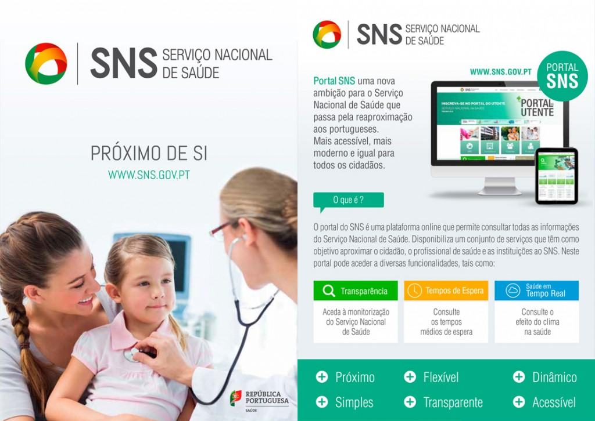

Somos um grupo de profissionais, constituídos por médicos, enfermeiros e secretários clínicos, que
prestam cuidados de saúde personalizados a uma determinada população, garantindo a acessibilidade, a
continuidade e a globalidade dos cuidados prestados.
 Quem somos
Indicadores
Recursos
Mais apoio
Quem somos
Indicadores
Recursos
Mais apoio